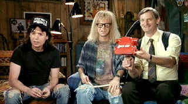

| Wayne's
World (SE)/B,A |
| Paramount/1992/94/ANA 1.85 |
Who let Wayne and Garth out? The wild party boys have arrived on DVD
with gushing enthusiasm in tact. Wayne's World is a home grown basement talk show hosted by a pair
of Aurora, Illinois dorks, Wayne Campbell and Garth Algar.
The heart of the flick is the zany cable show itself and there simply is not
enough of it. Skit based from Saturday Night Live, this is one time that the film focus should not
have strayed too far from home. Wayne's World is liveliest in its natural basement
environment or even when the show breaks out into a big time studio recreation. Expanding the world
with a drizzling romance, which happily showcases a young, hot Tia Carrere, doesn't provide the
same level of laughter you expect after the initial introduction to the goofy buddies. Their
airplane butt-gazing excursions are worth ten minutes of any flaccid romantic comedy.
 |
| The suck-cut came before Oreck.
©Paramount |
The comedy is goofy, spoofy, loose and free. Sometimes it even feels like a
mockumentary. The hit and miss style of dialogue works fine when it's frenetic. You can lose lines
in a rush of hilarity.
Mike Myers is so far over the top he's looking at you through the bottom, but
what would you expect. Myers makes an entertaining and even sometimes endearing Wayne Campbell.
Dana Carvey has got to wipe that smirk off his face as Garth Algar. Garth is dork spelled
differently and Carvey is milquetoast funny in the role. Rob Lowe has a lot of fun in the role of
the slick, handsome, cunning television producer Ben Oliver. He really has a way with the walk. And
Tia Carrere can belt out a rock number while swinging her hips quite nicely.
Penelope Spheeris turns out to be an outstanding choice as director. Spheeris,
whose experience making The Decline of Western Civilization, a heavy metal rock doc, led
producer friend Lorne Michaels to believe her understanding of the music would lead her to an
understanding of the world they wanted to create. Sounds like Wayne's logic to me, but it worked.
Her timing and pacing is outstanding. Little stands still on the Wayne's World timetable.
Spheeris' shoot on the fly documentary experience was tuned to the tight short production schedule
as well.
Transferring from pristine source material, Paramount delivers Wayne's
World to DVD in an explosion of carnival colors. Intense reds, shocking blues and eye-popping
shades of green maintain their individual space immaculately. Blacks have a beautiful range; they
glisten at night reflecting the bright party lights of the heavy metal bar. Talk about theatrical
punch, Wayne's World pops off the screen with terrific contrast range. Interior is varied lighting
situations reveal background details perfectly. Image is consistently sharp with no evident
artificial enhancement. You'll catch the twinkle in Garth's eye. The Dolby Digital 5:1 surround mix
is very good. Excellent directionality and front stage depth adds the last dimension to bringing Wayne's
World to life on DVD.
Penelope Spheeris delivers an excellent and candid audio commentary
accompanying the film. Spheeris is having fun remembering the experience. Her initial comments
include information about the origins of the show and the skits. Spheeris wanted to keep Wayne's
World close enough to reality. Her laughter is infectious. It's like she time warps back into Wayne's
World. The retrospective look at the film provides the definitive answer to who wrote the line
"I'll have the Cream of Sum Yung Goi." You guessed it folks, it was an ad lib that slid
effortlessly from the tongue of Mike Myers. |
|
|
|

Screen legend Gary Cooper
won two Academy Awards© as Best Actor during a career that included 114 Hollywood films. Click on
his image for a bio and poster images.

Take a look at the merry images of America's gift to
the movies: Hollywood Musical Posters are featured from The Movie
Poster Archive.


ISF Monitor Calibrations in the
Tristate New York area. Lots of hardware info and frequent hardware peaks from video expert Kevin
Miller.They may be judgmental, but that's the point, isn't it. Lots of DVD reviews plus news and
more.
 Jim
Doolittle Jim
Doolittle
ISF Instructor. Premier calibrator and expert front projection system setup technician in the
Boston area.

Cyber Theater is an outstanding source for accurate video information. Check out their 16 x 9
format guide for a thorough understanding of DVD encoded that way.

A great place for movie lovers and techies to visit for exchange of
ideas. New speedy interface is an inspiration for more dialogue. Home of Robert( Obi) George's DVD
reviews.
|